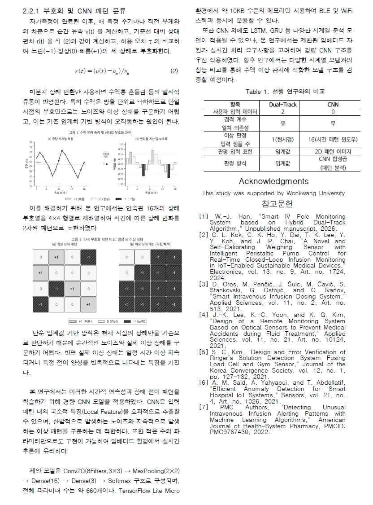
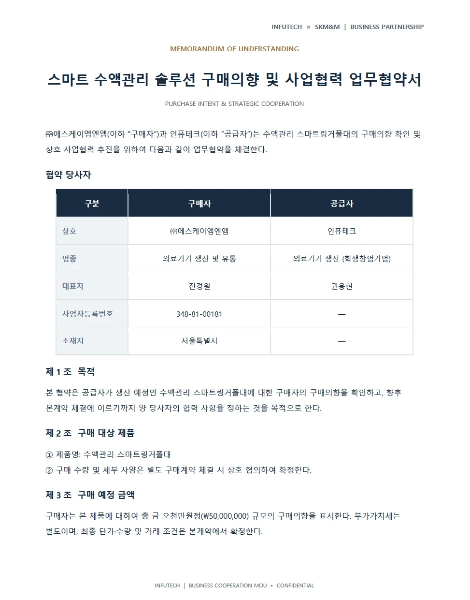

진료가 끝난 밤, 동물병원 입원실
수액은 지금도들어가고 있습니다
그런데, 지켜보는 사람은 없습니다.
Chapter 01시장의 변화
반려동물 의료는 일상이 됐고, 분쟁은 늘었습니다
농식품부 「2025년 반려동물 양육현황 조사」 · 한국소비자원 2026.9 · 국내 동물병원 5,312곳(농식품부 2025.6)
진료 기록 · 정보 제공,법적 의무가 됩니다
기록이 있으면 분쟁 해결률 1.5배 (19.5% → 30%)
감시에 기록까지, 1인 수의사 혼자.
현행 · 처치 기록 의무수의사법 제13조
2026.9.2 농해수위 의결진료기록 열람 · 사본 발급
법사위 · 본회의심사 대기
공포 1년 뒤 시행모든 동물병원
수의사법 제13조 · 농해수위 대안(2026.9.2) · 데일리벳 2026.8.27 · 한국소비자원 2026.9
4개 중 1개
카테터 합병증
입원 동물 수액 카테터 26.7%
Haskey 2024 · 영국 19개 기관 · 정맥염 포함
1~2시간
수액 확인 간격
그 사이 이상은 다음 순회에서야
AAHA 2024
10곳 중 7곳
수의사 1명
진료 · 수술 · 입원실을 혼자
농식품부 2025.6 · 5,312곳 중 3,815곳
사고는 순회와 순회 사이에서 납니다.
병원 현장 간호사 인터뷰 · 실제 사진
전남대 수의과대학 · 실제 사진
26곳
동물병원 · 병원 직접 방문호남권 반려동물병원 16 · 전북 병원 10
70%
"이상 상황을 스테이션으로 자동 전송해야"현장 간호사 75명 인터뷰 · 설문 (INFUTECH 자체 조사)
Chapter 05제품
INFURETRO
쓰던 폴대에 끼우기만 하면,
수액 이상을 먼저 알립니다
- 01갈고리 4개 · 수액백 4개 동시 측정
- 02줄 분리 · 소진 5초 안에 판정
- 03휴대폰 · 스테이션 알림 · 자동 기록
- 04폴대 · 수액 세트 교체 없음
하우징 3D 렌더
MVP
MVP 구현폴대에 끼우고 수액백을 거는 그대로 측정
PCB
ADS1232 & ESP32
프로세서 일체 PCB4×4 이미지 처리 · 연산 가속
LIVE DEMO · 실제 시연
01폴대에 끼우고
02수액백을 걸면, 측정 시작
03유속 빠름 → 알림줄 빠짐 의심
04유속 느림 → 알림혈액 역류 위험
05유속 정지 → 알림공기 색전 위험
Technology 01측정 · 잡음 제거
로드셀 무게 신호를 칼만 필터로
측정값 zk — 흔들림 · 잡음 포함칼만 추정 x̂k
MEASUREMENT
zk = wk + nk(1)
로드셀 4채널 · 24-bit ADC = 실제 무게 + 잡음 · 외란
PREDICT
x̂k− = F x̂k−1, Pk− = FPk−1FT + Q(2)
KALMAN GAIN
Kk = Pk−HT(HPk−HT + R)−1(3)
UPDATE
x̂k = x̂k− + Kk(zk − Hx̂k−)(4)
상태 [w, ẇ] — 무게와 유속을 함께 추정
식 (1)–(4) – INFUTECH 사업계획서 · 그래프는 실제 칼만 계산을 적용한 원리 예시
Technology 02흔들림 보정
가상 AI 자이로 + LLM · 유전 알고리즘 PID
01 VIRTUAL GYRO
자이로 없이 기울기 추정자이로를 단 프로세서 A와 로드셀만 단 프로세서 B의 편차로 지도학습 · 약 660개 파라미터 · 10KB · ESP32 탑재
02 LLM(LoRA) × GENETIC
환경마다 PID 게인 자동 튜닝
GEN40
LLM 후보 제안선택교차 · 변이평가
03 PID
흔들림 오차를 상쇄찾은 게인 (KP, KI, KD)로 가상 자이로가 추정한 무게 오차를 실시간으로 지웁니다
VIRTUAL GYRO · TRAINING
(θ̂k, Δŵk) = gφ(zk−N+1:k)(5)
minφ Σk ‖gφ(zB) − Δwk‖2(9)
PID CORRECTION
uk = KPek + KIΣeiΔt + KD(ek − ek−1)/Δt(7)
w̃k = ŵk − uk, vk = −(w̃k − w̃k−1)/Δt(8)(10)
식 (5)–(10) · 가상 자이로 gφ 지도학습 · PID(LoRA · 유전 알고리즘 튜닝) – INFUTECH 설계 · 그래프는 예시
Technology 034×4 패턴
무게 변화를 4×4 그림으로
3상태 부호화 sk ∈ {−1, 0, +1} · 16개를 모아 한 장의 그림으로
입력 그림 Xk · 4×4
FLOW DEVIATION
vn = (WI − Wf)/T(11)
rk = (vk − vn)/vn
3-STATE CODE
sk = −1 (rk < −τ)(12)
+1 (rk > τ), 0 (그 외)
4×4 ARRAY
Xk = reshape(sk−15:k, 4×4)(13)
ADS1232 · ESP32 일체 PCB에서 4×4 이미지 처리 · 연산 가속
식 (11)–(13) – 한우진 외, 「CNN 상태 패턴 분석 기반 정맥 수액 이상 감지 알고리즘」(우수논문상) · 그래프 · 배열은 예시
Technology 04AI 판정
RCNN — CNN은 모양을, RNN은 흐름을
RNN
hk = tanh(Whhk−1 + Wvvk + b)(14)
FUSION · 5 STATES
ŷk = argmax softmax(Wo[fC(Xk); hk] + bo)(15)
CNN 구조 – 한우진 외(우수논문상) · (14)–(15) RNN · 결합 판정 – INFUTECH 설계(정량 비교 진행 중) · 판정 5종 – 2026 캡스톤디자인 참가신청서
14.2%2.9%
잔량 최대 오차 · 단일 로드셀 대비 1/5
250/250
줄 분리 · 소진 감지 · 평균 2.8초
1/36
센서 비용 · 90만 원+ → 2.5만 원


내부 모의시험 · 모의 병실 1,000회(원광대 간호학과) · 우수논문 2편(국내 · 국제 AIT 2026)
Chapter 07시장의 필요, 실제 계약으로
㈜씨엔 · 물품공급 약정 5,100만 원KC 인증 후 공급


㈜에스케이엠엔엠 · 구매의향 · 사업협력 5,000만 원판로 · 홍보 협력
약정 · 협약 합계1억 100만 원+ 전남대 수의과대학 실증 LOI
INFURETRO
폴대는 그대로, 수액은 놓치지 않게
산업통상부장관상학생창업유망팀 300+ 선발우수논문 2편 · 특허 출원 3건
INFUTECH